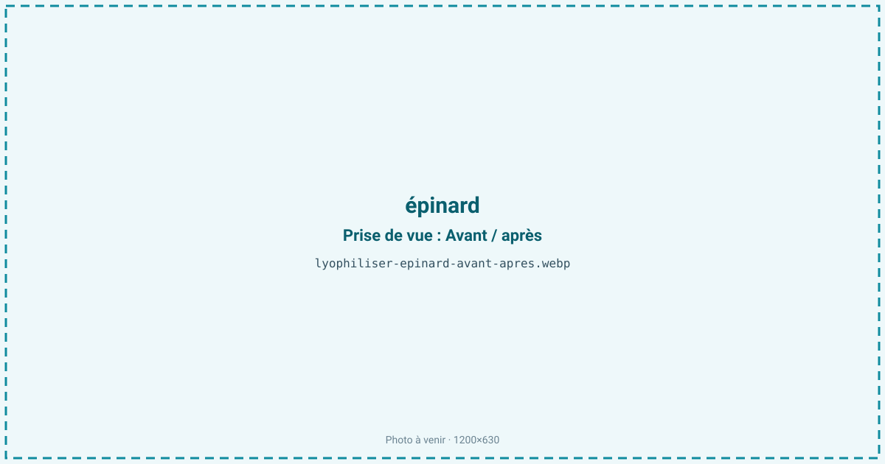
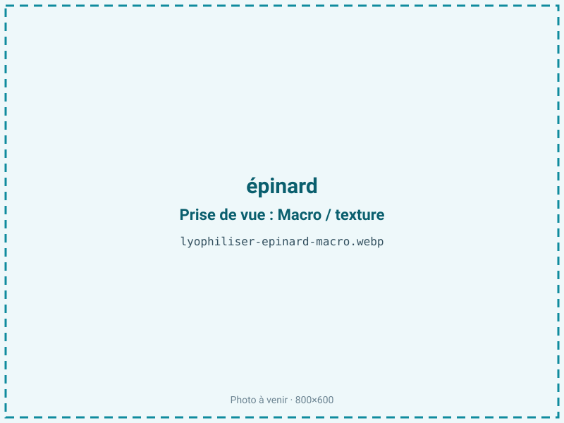
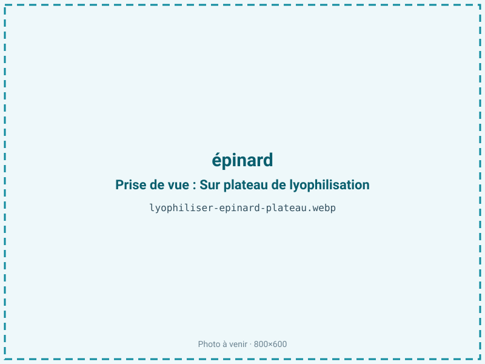
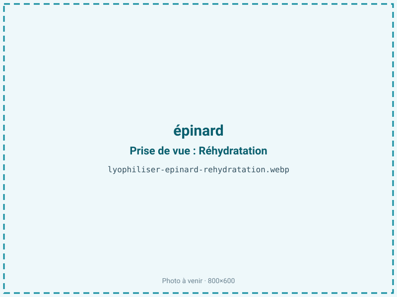

Lyophiliser des épinards
L'épinard frais se flétrit en deux jours et perd son volume à la cuisson. Lyophilisé, il devient une poudre verte concentrée ou des feuilles réhydratables qui gardent la couleur, les folates et le fer, sans la perte de vitamines du blanchiment à l'eau.

En bref
Comment épinard se comporte à la lyophilisation
L'épinard est une feuille très fine à 92 % d'eau, d'où un ratio élevé de 14:1 et un faible rendement. Sa couleur vient de la chlorophylle, sensible à la chaleur et aux milieux acides : chauffée, elle vire au brun-olive (phéophytine), ce que le froid évite. La feuille est riche en folates (vitamine B9) et en vitamine C, tous deux thermosensibles, ainsi qu'en fer, en oxalates et en nitrates.
Sa finesse est un atout pour le séchage : le front de sublimation traverse vite une lame de quelques dixièmes de millimètre, d'où un cycle court de 20 à 30 h malgré la forte teneur en eau. À la congélation, l'eau cristallise dans un tissu foliaire délicat ; à la sublimation, la feuille devient cassante et très légère. Le revers de cette finesse est la fragilité : la feuille sèche s'émiette au moindre contact, ce qui oriente souvent vers la poudre.
Paramètres de cycle
Laver et essorer soigneusement, puis étaler les feuilles à plat sans les tasser pour un séchage homogène ; empilées, elles collent et sèchent mal. Contrairement aux légumes plus épais, l'épinard n'a pas besoin d'être tranché.
Congeler à −30 °C. La feuille étant fine et peu sucrée, la sublimation primaire est courte et tolère une clayette franche sans risque de collapse. L'épinard étant un produit maigre sans lipides à protéger, on vise une aw basse de 0,20 à 0,30 : descendre est favorable à la stabilité et à la conservation de la couleur. Critère d'arrêt : une feuille cassante qui s'émiette, aw inférieure ou égale à 0,30. Le broyage éventuel se fait après séchage.
Pièges connus
- Feuille fine : séchage rapide mais fragile.
- Rendement faible, prévoir le volume.



Variantes & provenance
Le type change le rendu : l'épinard à grandes feuilles, plus charnu, donne un peu plus de matière sèche que l'épinard « baby » tendre, plus aqueux. La maturité et la saison modulent la teneur en oxalates et en nitrates — l'épinard de printemps en est plus chargé. Frais ou surgelé, le point de départ diffère : un épinard déjà surgelé a subi une pré-congélation qui a pu altérer les cellules. Feuille entière, hachée ou en poudre, le procédé s'ajuste, la poudre étant la forme la plus stable vu la fragilité de la feuille sèche. Un blanchiment préalable, s'il est pratiqué, fixe la couleur mais fait perdre des folates.
Conservation & DLUO
L'épinard est un produit maigre : son facteur limitant est la reprise d'humidité et la dégradation de la chlorophylle et des folates sous l'effet de la lumière et de l'oxygène. L'épinard étant maigre, une aw basse est recherchée sans crainte de rancissement. La feuille et la poudre sont hygroscopiques et se ré-humidifient vite à l'air, virant alors plus facilement au brun-olive. Une barrière opaque est recommandée pour protéger le vert. En barrière opaque, l'épinard lyophilisé se garde 12 à 24 mois à température ambiante. Le stockage au frais et à l'abri de la lumière préserve la couleur verte et limite la perte de vitamine C et de folates sur la durée.
12 à 24 mois en barrière opaque.
Estimez selon votre emballage :
Face aux autres procédés de séchage
Au séchage à l'air chaud, l'épinard vire au brun-olive et perd une large part de ses folates et de sa vitamine C : la chaleur transforme la chlorophylle et détruit les vitamines thermosensibles. Le micro-ondes sous vide fait mieux et coûte moins, mais préserve moins bien le vert franc et la réhydratation de la feuille. La lyophilisation conserve le mieux la couleur verte, la forme de la feuille et les nutriments, au prix d'un ratio 14:1 défavorable et d'un produit fragile. Pour une poudre verte nutritionnelle ou des feuilles à réhydrater, elle reste la voie de référence.
Marchés & applications
Poudre verte pour smoothies, pâtes, sauces et plats préparés, feuilles réhydratables pour rations de randonnée et plats instantanés, coloration et enrichissement de préparations. Les acheteurs types sont les marques de compléments et de superaliments, les fabricants de plats déshydratés et de pâtes, et les industriels de la nutrition.
- Poudre verte
- Plats instantanés
- Smoothies
Questions fréquentes — épinard
Pourquoi l'épinard vire-t-il au brun ?
Parce que sa chlorophylle se transforme en phéophytine brun-olive sous l'effet de la chaleur ou d'un milieu acide. Le froid de la lyophilisation évite ce virage et préserve le vert.
Le rendement est-il faible ?
Oui : environ 14:1, soit 14 kg d'épinard frais pour 1 kg de produit sec, car la feuille contient 92 % d'eau. Le volume à traiter est important.
La feuille reste-t-elle entière ?
Elle sèche entière mais devient très cassante et s'émiette facilement ; beaucoup d'usages passent donc par la poudre, plus stable à manipuler.
Les folates et le fer sont-ils conservés ?
Le fer, minéral, reste ; les folates et la vitamine C, thermosensibles, sont bien mieux préservés à froid qu'au séchage à chaud, sans les pertes du blanchiment à l'eau.
Faut-il blanchir l'épinard avant ?
Ce n'est pas obligatoire : le blanchiment fixe la couleur mais fait perdre des folates. Un traitement à froid direct conserve mieux les vitamines.
La poudre se réhydrate-t-elle ?
Oui : elle se reconstitue dans un liquide chaud ou froid pour sauces, plats et smoothies, en retrouvant volume et couleur.
Peut-on partir d'épinard surgelé ?
Oui, mais la pré-congélation a déjà pu altérer les cellules ; l'épinard frais donne une meilleure tenue de la feuille.
Prochaine étape : envoyez-nous 200 g
Vous avez les repères de l'épinard. La suite logique : nous envoyer un échantillon et repartir avec une fiche technique sur votre produit — rendement, aw finale, coût au kilo.
Tester l'épinard — 250 à 500 €Déductible de votre premier lot.